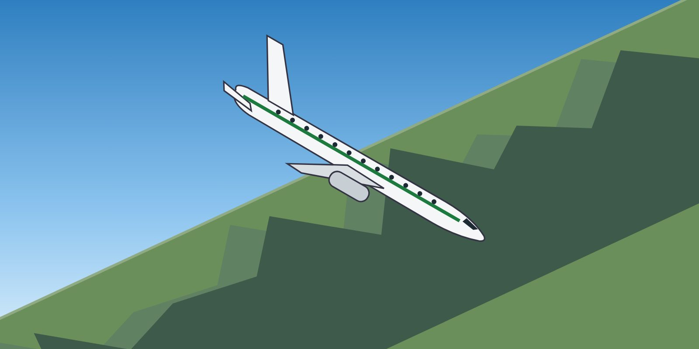

Module 6 · Recovery
Lesson 22: Nose-Low and High-Bank Upset Recovery
Lesson narration
Checking for narration…
Learning objectives
- Apply the generic nose-low recovery technique.
- Explain why the wings must be levelled before pulling.
- Manage speed and g in a high-speed, nose-low recovery.

The situation
The pitch is unintentionally low — for example more than 10° nose-down — often combined with a high bank angle. The speed is usually increasing. The danger is overspeed, structural overload and ground contact — and, if the aircraft is stalled, a continued uncontrolled descent.
Generic technique (based on industry guidance)
- Recognise and confirm the situation. Announce “Nose low”, with the direction of bank.
- Autopilot and autothrust — disconnect.
- Recover from the stall, if stalled — even with the nose low, the wing may be stalled (high descent rate, stall warning, buffet). Reduce the angle of attack first.
- Roll in the shortest direction to wings level. Full aileron and spoiler may be needed. It may be necessary to unload (reduce back pressure) to improve roll response.
- Recover to level flight: apply nose-up elevator smoothly, use stabiliser trim if necessary, and adjust thrust and drag as required — reduce thrust and extend the speedbrakes if the speed is high.
Always follow the manufacturer's procedure for your type.
Why roll before pull
- With high bank, pulling back mainly tightens the turn and increases the descent — it does not raise the nose. This is how a graveyard spiral develops.
- A rolling pull — rolling and pulling at the same time — produces asymmetric structural loads with lower limits.
- Once the wings are near level, the lift vector points up, and the pull raises the nose efficiently.
Bank beyond 90°
If the aircraft is beyond 90° of bank, the shortest way to wings level may require continuing the roll through the inverted position — follow the sky pointer. Unload while rolling. Pulling while inverted only steepens the dive.
Managing speed and g
- Reduce thrust and use speedbrakes as needed to control the speed.
- Pull smoothly to recover — firmly enough to stop the descent, but without exceeding the g limit or triggering the stall warning. Your FCTM gives type-specific guidance.
- Avoid a secondary nose-high upset: as the nose passes the horizon, establish level flight and a suitable speed.
Key takeaways
- Nose-low: automation off → stall recovery if stalled → roll wings level (shortest direction) → then pull.
- Never pull with high bank — it tightens the spiral and risks a rolling pull.
- Control speed with thrust and speedbrakes; pull smoothly within g limits.
Knowledge check
In a nose-low upset with 80° of bank and increasing speed, what should you do before pulling back?